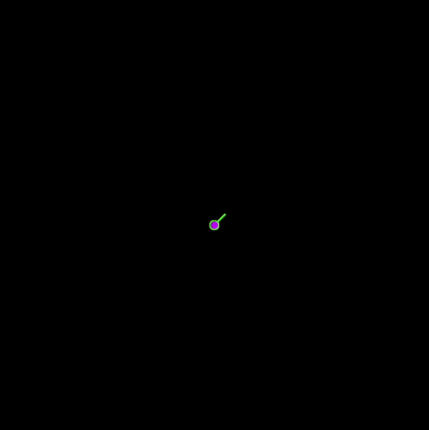
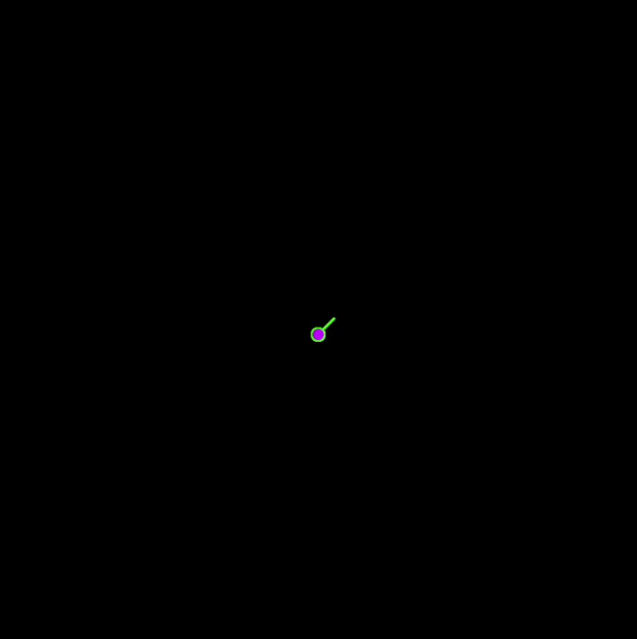

3. Make Your Own Project
Tinker
To make and save your own project, you'll work in the p5.js Web Editor.
Click this link to open the p5.js Web Editor
in another tab. A new project opens. If you haven't already signed into the
p5.js Web Editor, do so now.
Select all the code and press Delete
or Backspace to delete it.
Then paste the code you copied.
Rename the project "Spirals," or something similar.
You can copy and paste one of the code examples below to use as a starter project or
simply use the examples as a reference for making a completely new project of your own.
Each example creates one of the images shown at the beginning of this lesson.
Have fun! üëè
Example #1 — Spinning Circles
For this project, see the first GIF image at the beginning of this lesson.
The starter code below shows a single ellipse changing colors randomly.
You must make it move further and further from the center of the canvas over time,
and you must also make the canvas rotate. If you wish, you can make the animation
stop after awhile.
The project includes all the variables you'll need.
Use the variable r to change the rotation
and the variable x to change the ellipse's x-coordinate, or sideways position.
let r = 0;
let x = 0;
function setup() {
createCanvas(400, 400);
colorMode(HSB);
background(0, 100, 0);
}
function draw() {
translate(width/2, height/2);
rotate(r);
fill(random(360), 100, 100);
ellipse(x, 0, 8, 8);
}
Example #2 — Colored Squares
For this project, see the second GIF image at the beginning of this lesson.
Although the second GIF looks very different from the first one, the code is almost the same.
The only important difference is that the second GIF image includes two ellipses —
a long orange ellipse and a circular yellow ellipse inside it. Both ellipses change position.
See if you can write the code for this project based on the
starter code for Example #1.
Example #3 — Shrinking Rectangles
For this project, see the third GIF image at the beginning of this lesson.
The starter code below shows a single rectangle.
You must make it get smaller and smaller, and you must make the canvas rotate.
The project includes all the variables you'll need.
Use the variable r to change the rotation
and the variable sz to change the rectangle's size (height and width).
let r = 0;
let sz = 100;
function setup() {
createCanvas(400, 400);
colorMode(HSB);
background(0, 100, 0);
}
function draw() {
translate(200, 200);
rotate(0);
fill(51, 100, 100);
rect(0, 0, 100, 100);
}
Example #4 — Lines
For this project, see the fourth GIF image at the beginning of this lesson.
The starter code below shows an ellipse at one end of a short line.
You must make the ellipse and the line change their positions together, and you must make the canvas rotate.
Feel free to change the colors and to stop the animation.
One end of the line moves straight downwards over time,
and the other end moves sideways by the same amount (making the line longer). To say this another way,
one end of the line changes its y-coordinate and the other end changes its
x-coordinate by the same amount.
The ellipse changes its y-coordinate so that it moves with one end of the line.
You can see these movements in the GIF image below.
The canvas rotates while the line and ellipse are moving, as
in the GIF image below.
The project includes all the variables you'll need.
Use the variable r to change the rotation
and the variable z to change the ellipse's y-coordinate
and the line's x- and y-coordinates.
let r = 0;
let z = 0;
function setup() {
createCanvas(400, 400);
colorMode(HSB);
background(0, 100, 0);
}
function draw() {
translate(200, 200);
rotate(1);
stroke(105, 100, 100);
line(0, 12, 12, 0);
fill(285, 100, 100);
ellipse(0, 12, 8, 8);
}

 
